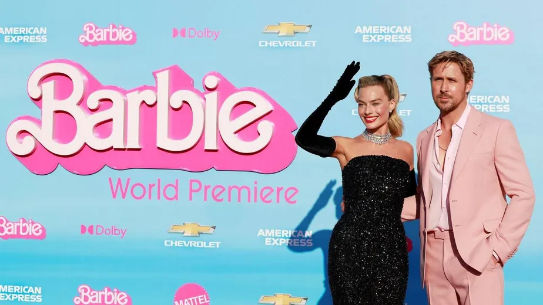

Últimas notícias
Filme da Barbie estreia com grande sucesso nos cinemas
O filme Barbie é a maior estreia do ano nos Estados Unidos e Canadá até agora, informou a distribuidora Warner Bros.
Estima-se que US$ 155 milhões (aproximadamente R$ 740 milhões) foram arrecadados no fim de semana das primeiras exibições, segundo a empresa.
Confira os atores do filme:
- Margot Roberts
- Ryan Gosling
- Emma Mackey
- America Ferrera
Margot Elise Robbie é uma atriz e produtora australiana, indicada a dois Óscares, quatro Globos de Ouro e cinco BAFTAs. Em 2017, a revista Time a nomeou uma das 100 pessoas mais influentes do mundo, e em 2019, ela foi classificada entre as atrizes mais bem pagas do mundo pela Forbes.
Ryan Thomas Gosling é um ator, músico, produtor e diretor de cinema canadense. Ele começou sua carreira como um ator mirim no programa da Disney Channel, Clube do Mickey, e passou a aparecer em outros programas de entretenimento familiar, incluindo as séries de terror infantil Você Tem Medo do Escuro? e Goosebumps.
Emma Margaret Marie Tachard-Mackey é uma atriz e modelo franco-britânica, que ficou conhecida por interpretar Maeve Wiley na série da Netflix, Sex Education.
America Ferrera é uma atriz norte-americana conhecida por interpretar Betty Suarez na série Ugly Betty. Profissionalmente, America iniciou sua carreira como atriz no início dos anos 2000. Seu primeiro grande papel aconteceu no filme independente Mulheres de Verdade Têm Curvas.